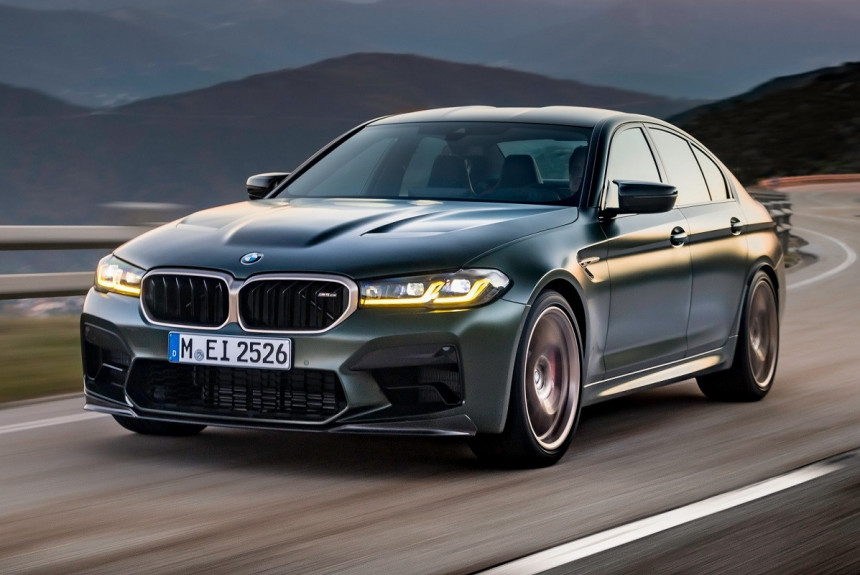

Краткая история М5
Началом истории «заряженных» седанов BMW M5 принято считать появление модели M535i в 1979 году (индекс E12) на автосалоне во Франкфурте. Последующие поколения M5 сменялись совместно с каждым поколением автомобилей пятой серии, включающей E12, E28, E34, E39, E60/61, F10, F90.
bmw M5 F90
Перед нами ― революционная модель BMW M5 Completition, невероятно красиво. Первая легковая «эмка» с полным приводом! Трансмиссия конструктивно такая же, как на других автомобилях из Мюнхена, ― по умолчанию привод задний, а переднюю ось подключает электронноуправляемая многодисковая муфта. Отличия ― в усиленных компонентах, активном M-дифференциале и софте: у полного привода есть три алгоритма работы, включая дрифт-режим, который активируется при полностью отключенной системе стабилизации.
В августе семнадцатого года состоялась официальная презентация «заряженного» седана BMW M5 нового поколения в кузове F90. Новинка получила целый ряд как визуальных, так и технических отличий от стандартной «пятерки».
Вживую автомобиль представили общественности в сентябре семнадцатого на автосалоне во Франкфурте..

Характеристики
В движение БМВ М5 2021 приводит модернизированный 4,4-литровый V8 twin-turbo, отдача которого была увеличена с 560 до 600 л.с. Максимальный крутящий момент равен 750 Нм и доступен в диапазоне от 1 800 до 5 600 об/мин. Работает мотор в связке с 8-диапазонным автоматом ZF, тогда как на M5 F10 ставили робот (на рынке США были версии с МКПП).
На колесах бмв м5 установлены чугунные тормоза с шестипоршневыми суппортами спереди и однопоршневые с плавающей скобой — сзади. За существенную доплату машину можно заказать с более легкими (- 23 кг) карбоно-керамическими тормозами, суппорты которых окрашены в золотистый цвет.
С места до сотни новая M5 F90 разгоняется за 3,4 секунды, то есть на 0,9 сек. быстрее модели прежней генерации, что делает ее самым быстрым седаном в истории баварской марки. В дальнейшем разгон не ослабевает, и для взятия планки в 200 км/ч автомобилю требуется 11,1 с (- 1,9).
Максимальная скорость по традиции ограничена электроникой на отметке в 250 км/ч, однако при заказе опционального пакета M Driver’s баварцы ослабят «ошейник», позволив автомобилю разгоняться вплоть до 305 км/ч.
Кроме того, BMW M5 (F90) стал первой легковой «эмкой» с полным приводом. По умолчанию седан имеет задний привод, а передняя ось подключается по мере необходимости с помощью электронноуправляемой многодисковой муфты.
Такая система полного привода под названием M xDrive имеет три режима работы, из которых упоминания заслуживает так называемый дрифт-режим. Последний активируется только при полностью отключенной системе стабилизации. А цена за bmw M5 составляет:
4.4 (625 л.с.) Competition xDrive AT8 9 400 000
4.4 (625 л.с.) Competition M Special xDrive AT8 10 600 000
4.4 (635 л.с.) CS xDrive AT8 14 000 000
Полный обзор на bmw m5